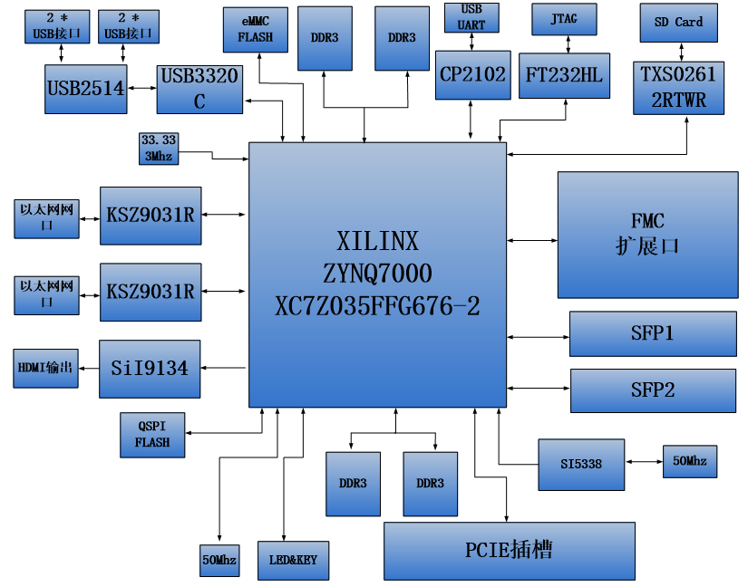

开发板简介和检测¶
开发板简介¶
在这里，对这款AX7350 ZYNQ开发平台进行简单的功能介绍。
开发板主要由ZYNQ7350主芯片，4个DDR3，1片eMMC，1个QSPI FLASH和一些外设接口组成。ZYNQ7350采用Xilinx公司的Zynq7000系列的芯片，型号为XC7Z035-2FFG676。ZYNQ7035芯片可分成处理器系统部分Processor System（PS）和可编程逻辑部分Programmable Logic（PL）。在ZYNQ7350芯片的PS端和PL端分别挂了2片DDR3，每片DDR3容量高达512M字节，使得ARM系统和FPGA系统能独立处理和存储的数据的功能。PS端的8GB eMMC FLASH存储芯片和256Mb的QSPI FLASH用来静态存储ZYNQ的操作系统、文件系统及用户数据。
AX7350开发板扩展了丰富的外围接口，其中包含1个PCIex4插槽、2路光纤接口、2路千兆以太网接口、4路USB2.0 HOST接口、1路HDMI输出接口，1路UART串口接口、1路SD卡接口、1个FMC扩展接口和一些按键LED。
下图为整个开发系统的结构示意图：
通过这个示意图，我们可以看到，我们这个开发平台所能含有的接口和功能。
Xilinx ARM+FPGA芯片Zynq-7000 XC7Z035-2FFG676。
DDR3
带有四片大容量的512M字节（共2GB）高速DDR3 SDRAM。其中两片挂载在PS端，可作为ZYNQ芯片数据的缓存，也可以作为操作系统运行的内存; 另外两片挂在PL端，可作为FPGA的数据存储，图像分析缓存，数据处理。
eMMC
PS端挂载一片8GB eMMC FLASH存储芯片，用户存储操作系统文件或者其他用户数据。
QSPI FLASH
一片256Mbit的QSPI FLASH存储芯片, 可用作ZYNQ芯片的Uboot文件，系统文件和用户数据的存储;
PCIe x4接口
一路标准的PCIEx8的主机插槽用于PCIEx4通信, 可用于连接PCIEx4, x2, x1的PCIE板卡，实现PCIE数据通信。支持PCI Express 2.0标准，单通道通信速率可高达5GBaud。
2路SFP光纤接口
ZYNQ的GTX收发器的2路高速收发器连接到2个光模块的发送和接收，实现2路高速的光纤通信接口。每路的光纤数据通信接收和发送的速度高达10Gb/s。
千兆以太网接口
2路10/100M/1000M以太网RJ45接口，用于和电脑或其它网络设备进行以太网数据交换。网络接口芯片采用Micrel公司的KSZ9031工业级GPHY芯片，1路以太网连接到ZYNQ芯片的PS端，1路以太网连接到ZYNQ芯片的PL端。
HDMI视频输出
1路HDMI视频输出接口，我们选用了Silion Image公司的SIL9134 HDMI编码芯片，最高支持1080P@60Hz输出，支持3D输出。
USB2.0 HOST接口
通过USB Hub芯片扩展4路USB HOST接口，用于连接外部的USB从设备，比如连接鼠标，键盘，U盘等等。USB接口采用扁型USB接口(USB Type A)。
USB Uart接口
2路Uart转USB接口，用于和电脑通信，方便用户调试。1路在核心板上，核心板独立工作是使用，1路在底板上， 整板调试时使用。串口芯片采用Silicon Labs CP2102GM的USB-UAR芯片, USB接口采用MINI USB接口。
Micro SD卡座
1路Micro SD卡座，用于存储操作系统镜像和文件系统。
FMC扩展口
1个标准的FMC LPC的扩展口，可以外接XILINX或者我们黑金的各种FMC模块（HDMI输入输出模块，双目摄像头模块，高速AD模块等等）。FMC扩展口包含33对差分IO信号和一路高速GTX收发信号。
USB JTAG口
一路USB JTAG口，通过USB线及板载的JTAG电路对ZYNQ系统进行调试和下载
时钟
板载一个33.333Mhz的有源晶振，给PS系统提供稳定的时钟源，一个50MHz的有源晶振，为PL逻辑提供额外的时钟；另外板上有一个可编程的时钟芯片给GTX提供时钟源，为PCIE，光纤和DDR工作提供参考时钟。
LED灯
9个发光二极管LED, 1个电源指示灯；1个DONE配置指示灯；2个串口通信指示灯，1个PS控制LED灯，4个PL控制指示灯。
按键
6个按键，1个复位按键，1个PS用户按键，4个PL用户按键。
开发板检测¶
拿到开发板，大部分人都想立即体验一下，看看开发板是否正常工作，下面我们介绍如何对开发板进行一个简单的检测。
检测需要自备的工具¶
电脑

支持HDMI的显示器，要求分辨率不小于1920x1080

HDMI线缆2条

USB鼠标键盘

路由器，为了测试网络，最好能连接互联网，支持DHCP。
{kind=link}
网线

开发板线缆连接¶
连接HDMI显示器

连接usb转串口，主要用于看ARM打印出的一些信息
连接ARM端网口（ETH1）到路由器
连接电源
开始测试¶
测试前我们需要安装USB转串口的驱动软件（软件/CP210x_Windows_Drivers.zip），不然无法做串口通信测试，双击exe文件进行驱动安装。驱动安装好以后，用红色USB线连接电脑USB口和开发板上的UART口(J1)进行连接, 然后打开电脑的设备管理器，设备管理器能够找到串口设备CP210x, 我机器上映射的是COM3。如果不能成功安装驱动，可以尝试使用驱动精灵安装。


终端工具有很多，例如putty，teraterm, Windows自带终端工具，SecureCRT等等，众多终端工具中，比较下来，还是putty最好用，资料（软件/ putty.exe）为大家准备了绿色免安装的putty软件。
选择Serial，Serial line填写COM3，Speed填写115200，COM3串口号根据设备管理器里显示的填写

选择Serial，并将流控Flow control改为None，点击“Open”


启动后界面
确定开发板启动模式是否为SD启动模式（默认出厂时开发板的SD卡插槽里有卡，启动模式默认也是SD卡），拨动拨码开关时用一个带尖端的工具，例如，镊子，取卡针等，轻轻拨动。
打开开发板上的电源开关，PuTTY工具窗口会显示u-boot和Linux系统的启动信息。

可以在串口终端登陆系统，用户: root，密码: root

启动完成后连接开发板HDMI显示器会显示Debian的桌面。

这时可以使用连接到鼠标和键盘来操作了，用鼠标双击Web浏览器，启动浏览器时间较长，请耐心等待。

地址栏输入网址，我们这里输入黑金动力社区的网址。正常打开，我们的开发板已经能正常上网了。
{kind=link}
开发板的简单检测到此结束。
为了您方便找到教程中所用到的软件、源码包、驱动等，下面会介绍一下软件包里主要内容，教程中难免有疏漏之处，找不到时麻烦您搜索一下您的电脑。
软件包说明¶

CP210x_Windows_Drivers.zip 串口驱动
Xilinx_Unified_2023.1_0507_1903.tar.gz Vivado 2023.1安装包，Windows和Linux通用版本，Windows下需要WinRAR解压软件。
petalinux-v2023.1-final-installer.run petalinux安装包
qt-opensource-windows-x86-mingw530-5.7.1.exe Windows版本QT
qt-opensource-linux-x64-5.7.1.run Linux版本QT
imageUSB.exe 镜像恢复工具
00_resource内包含Linux源代码、根文件系统
VMware-workstation-full-12.1.1-3770994.exe 虚拟机安装包
ubuntu-16.04.3-desktop-amd64.iso Ubuntu安装包，只能装在PC上，不能装开发板
ZYNQ-7000开发平台 FPGA教程 - Alinx官方网站